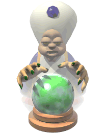

Analyse en cours… 🤖✨ Selon mes calculs d'IA, ton image représente Astérix. Mais attention, je garde encore un petit doute… Obélix pourrait bien pointer le bout de son nez.
D'après mes calculs, j'ai fait 10 fautes, mais trouvé 214 bons résultats !